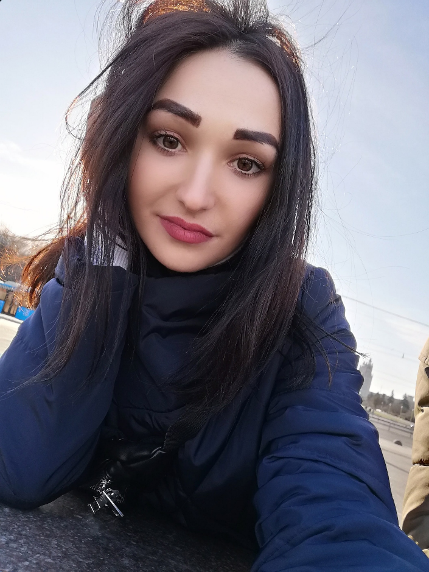

Name: Herman Streltsov
Occupation: Frontend Developer
Location: Tambov, Russia
E-mail: mail@streltsov.dev
Skills: [ JavaScript, React, Redux ]
About: Hello, my name is Herman. I am a Frontend Developer living in Tambov, Russia.
I am currently working as a Frontend Developer at Fly Code, which is where my passion for development converge.
Also, I am working on a few side projects including Kanzi and Washoe, web extensions that help language learners to build vocabulary while surfing the internets.
If you’re interested in collaborating on a project or just want to say hello, don’t hesitate to get in touch.
Links: [ GitHub, LinkedIn, Twitter ]